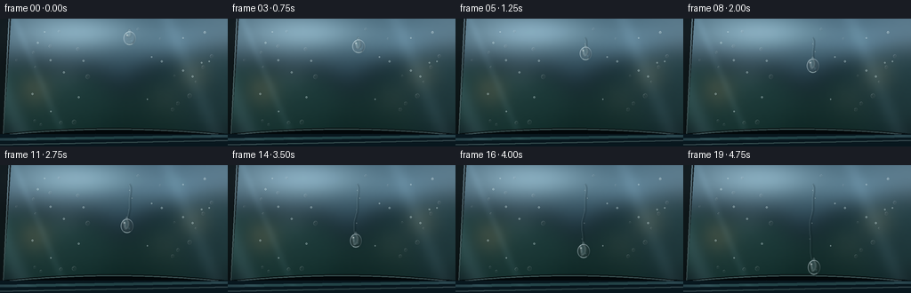
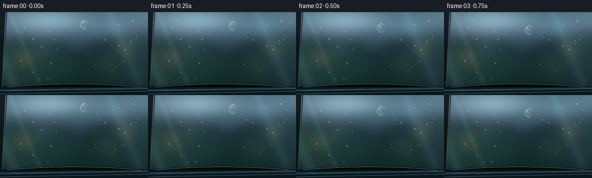

CODING AGENTS AS PIXEL WORLD MODELS
traex/GPT-5.6-Sol · mechanics_0050
点击播放 · 原生 RGB 像素
逐轮保存的候选
回放视频、检查图与代码变化。
每份候选均可单独播放。实际图片检查记录在下方工具轨迹中。
候选 01播放与检查图
点击播放 · 原生 RGB 像素


展开代码变化
--- 上一保存版本
+++ 本次保存版本
@@ -0,0 +1,217 @@
+from pathlib import Path
+import math
+import numpy as np
+import cv2
+from PIL import Image, ImageDraw, ImageFilter
+import artifact_io
+
+# Procedural macro shot of rainwater on a freshly washed automobile side window.
+# Everything is rendered at 3x and reduced for clean antialiasing.
+W, H, N = 256, 144, 20
+S = 3
+w, h = W*S, H*S
+rng = np.random.default_rng(5050)
+
+def smoothstep(a, b, x):
+ q = np.clip((x-a)/(b-a), 0.0, 1.0)
+ return q*q*(3-2*q)
+
+def make_glass():
+ yy, xx = np.mgrid[0:h, 0:w]
+ X, Y = xx/S, yy/S
+ # Cool tinted glass. This is a reflection-rich but deliberately defocused scene.
+ top = np.array([80., 111., 128.])
+ bot = np.array([19., 38., 43.])
+ v = smoothstep(0, H, Y)[...,None]
+ arr = top*(1-v) + bot*v
+ arr += (9*np.sin((X+Y*.23)/35) + 4*np.sin(Y/13))[...,None]
+ # A blue cloudy reflection in the upper half.
+ cloud = np.exp(-(((X-94)/67)**2 + ((Y-16)/20)**2))
+ arr += cloud[...,None]*np.array([48,54,55])
+ cloud2 = np.exp(-(((X-207)/47)**2 + ((Y-36)/26)**2))
+ arr += cloud2[...,None]*np.array([20,27,31])
+ # Out-of-focus trees/bushes seen through and reflected in the pane.
+ layer = Image.new('RGBA',(w,h),(0,0,0,0))
+ d = ImageDraw.Draw(layer,'RGBA')
+ foliage = [
+ (23,88,42,(20,57,45,145)), (50,100,49,(15,45,39,160)),
+ (88,110,54,(20,53,45,150)), (199,99,56,(11,34,35,165)),
+ (239,82,48,(18,44,44,150)), (166,116,46,(18,45,38,150))]
+ for cx,cy,r,c in foliage:
+ d.ellipse(((cx-r)*S,(cy-r)*S,(cx+r)*S,(cy+r)*S),fill=c)
+ # Distant warm lights make droplets' optical inversion obvious.
+ for cx,cy,r,c in [(39,80,8,(246,184,93,105)),(218,62,7,(251,195,107,110)),
+ (185,89,4,(250,222,166,105)),(73,62,5,(218,236,228,75))]:
+ d.ellipse(((cx-r)*S,(cy-r)*S,(cx+r)*S,(cy+r)*S),fill=c)
+ layer = layer.filter(ImageFilter.GaussianBlur(12*S))
+ fg = np.array(layer).astype(np.float32)
+ a = fg[...,3:4]/255
+ arr = arr*(1-a)+fg[...,:3]*a
+ # Soft diagonal reflection stripes from sky/buildings.
+ for intercept, width, strength in [(-30,12,21),(16,5,10),(188,10,12)]:
+ dist = np.abs(X - .42*Y - intercept)
+ band = np.exp(-(dist/width)**2)[...,None]
+ arr += band*np.array([strength*.76,strength*.9,strength])
+ # very gentle fine glass texture
+ noise = rng.normal(0,1.8,(h,w)).astype(np.float32)
+ noise = cv2.GaussianBlur(noise,(0,0),1.2*S)
+ arr += noise[...,None]
+ return np.clip(arr,0,255).astype(np.uint8)
+
+base = make_glass()
+
+def alpha_overlay(dst, rgba):
+ src = rgba[...,:3].astype(np.float32)
+ a = rgba[...,3:4].astype(np.float32)/255
+ return np.clip(dst.astype(np.float32)*(1-a)+src*a,0,255).astype(np.uint8)
+
+# Permanently visible car-window architecture: black rubber seals and wet metallic body.
+def add_car_frame(img):
+ pil = Image.fromarray(img)
+ ov = Image.new('RGBA',(w,h),(0,0,0,0)); d=ImageDraw.Draw(ov,'RGBA')
+ # left sloping window pillar
+ d.polygon([(0,0),(12*S,0),(3*S,h),(0,h)], fill=(7,12,14,215))
+ d.line([(10*S,0),(3*S,h)], fill=(148,169,172,70), width=1*S)
+ # Curved lower rubber window seal
+ pts=[]
+ for x in range(-5,262,2):
+ y=126.5 + 0.00042*(x-128)**2
+ pts.append((x*S,y*S))
+ d.line(pts,fill=(2,7,9,245),width=7*S)
+ d.line([(x,y-2*S) for x,y in pts],fill=(154,181,184,72),width=1*S)
+ # blue-black glossy car paint below the seal
+ poly=[(-5*S,130*S),(261*S,130*S),(261*S,145*S),(-5*S,145*S)]
+ d.polygon(poly,fill=(8,23,30,255))
+ d.line([(-3*S,136*S),(259*S,132*S)],fill=(76,123,138,80),width=3*S)
+ d.line([(-3*S,142*S),(259*S,137*S)],fill=(179,206,207,35),width=1*S)
+ ov=ov.filter(ImageFilter.GaussianBlur(.22*S))
+ return alpha_overlay(np.array(pil),np.array(ov))
+
+base = add_car_frame(base)
+
+# Fixed micro-droplets. The main travelling droplet is larger and substantially sharper.
+fixed=[]
+for _ in range(44):
+ x=float(rng.uniform(16,248)); y=float(rng.uniform(8,120))
+ # reserve uncluttered region around the moving droplet
+ if abs(x-145)<17 and 12<y<124: continue
+ r=float(rng.choice([.65,.8,1.0,1.2,1.5,1.9,2.5],p=[.13,.17,.20,.19,.15,.11,.05]))
+ fixed.append((x,y,r,float(rng.uniform(0,math.tau))))
+
+def render_lens(img, cx, cy, rx, ry, sharp=1.0, opacity=1.0, phase=0.0):
+ """Composite a transparent convex droplet using refractive displacement and Fresnel rim."""
+ out=img.copy()
+ cxs,cys,rxs,rys = cx*S,cy*S,rx*S,ry*S
+ pad=3.0*S
+ x0=max(0,int(cxs-rxs-pad)); x1=min(w,int(cxs+rxs+pad)+1)
+ y0=max(0,int(cys-rys-pad)); y1=min(h,int(cys+rys+pad)+1)
+ if x1<=x0 or y1<=y0:return out
+ yy,xx=np.mgrid[y0:y1,x0:x1].astype(np.float32)
+ nx=(xx-cxs)/max(rxs,1); ny=(yy-cys)/max(rys,1)
+ rr=np.sqrt(nx*nx+ny*ny)
+ # mask is antialiased at high res
+ mask=(1-smoothstep(.90,1.035,rr))*opacity
+ # Convex lens magnifies/inverts detail near the edge and adds tiny gravity shear.
+ factor=.48 + .12*rr*rr
+ mapx=(cxs+(xx-cxs)*factor + 0.20*rys*ny*ny).astype(np.float32)
+ mapy=(cys+(yy-cys)*factor - .09*rys + .08*rxs*nx).astype(np.float32)
+ refr=cv2.remap(img,mapx,mapy,cv2.INTER_CUBIC,borderMode=cv2.BORDER_REFLECT)
+ # water slightly brightens/desaturates reflected light
+ gray=np.mean(refr.astype(np.float32),axis=2,keepdims=True)
+ refrf=refr.astype(np.float32)*.91+gray*.055+10
+ dst=out[y0:y1,x0:x1].astype(np.float32)
+ dst=dst*(1-mask[...,None])+refrf*mask[...,None]
+ # Fresnel ring: a dark outside edge paired with a fine bright interior edge.
+ rim=np.exp(-((rr-.91)/.050)**2)*opacity
+ # lighting varies around circumference: brighter upper-left, dark lower-right
+ light_dir=np.clip((-nx-ny)*.37+.62,0,1)
+ rim_col=np.stack([176+55*light_dir,205+40*light_dir,213+38*light_dir],axis=2)
+ rim_a=(rim*(.16+.45*light_dir))[...,None]
+ dst=dst*(1-rim_a)+rim_col*rim_a
+ dark=np.exp(-((rr-.82)/.12)**2)*np.clip((nx+ny)*.5,0,1)*.30*opacity
+ dst*=1-dark[...,None]
+ # compact rectangular specular reflection and secondary pin light
+ hl=np.exp(-(((nx+.39)/.18)**2+((ny+.42)/.12)**2)*2.2)*opacity
+ gl=np.exp(-(((nx-.30)/.13)**2+((ny-.32)/.16)**2)*2.0)*opacity
+ dst=dst*(1-hl[...,None]*.73)+np.array([250,254,252])*hl[...,None]*.73
+ dst=dst*(1-gl[...,None]*.18)+np.array([174,224,230])*gl[...,None]*.18
+ out[y0:y1,x0:x1]=np.clip(dst,0,255).astype(np.uint8)
+ return out
+
+def add_fixed_droplets(img, frame):
+ out=img
+ for i,(x,y,r,p) in enumerate(fixed):
+ # subpixel settling only, so the pane feels alive without background jitter
+ yy=y + (0.22*frame/19 if i%13==0 else 0)
+ if r < 1.05:
+ # Tiny beads are represented by bright/dark paired glints.
+ pil=Image.fromarray(out); dr=ImageDraw.Draw(pil,'RGBA')
+ dr.ellipse(((x-r)*S,(yy-r)*S,(x+r)*S,(yy+r)*S),
+ fill=(194,220,224,80),outline=(235,248,246,120),width=max(1,S//2))
+ out=np.array(pil)
+ else:
+ out=render_lens(out,x,yy,r,r*1.06,.8,.68,p)
+ return out
+
+def path_at(u):
+ # slow initial release, then gravity accelerates the bead; slight meandering follows glass texture
+ y=22 + 93*(0.18*u + 0.82*u**1.34)
+ x=145 + 2.0*math.sin(2.15*math.pi*u+.3) + .65*math.sin(6.3*math.pi*u)
+ return x,y
+
+def add_wet_trail(img,u,cx,cy):
+ pil=Image.fromarray(img)
+ ov=Image.new('RGBA',(w,h),(0,0,0,0)); d=ImageDraw.Draw(ov,'RGBA')
+ # polyline of the traversed route, translucent dark center with bright meniscus edges
+ pts=[]
+ for k in range(max(3,int(55*u)+2)):
+ q=(k/max(2,int(55*u)+1))*u
+ x,y=path_at(q); pts.append((int(x*S),int(y*S)))
+ if len(pts)>1:
+ d.line(pts,fill=(7,23,27,42),width=3*S)
+ # broken, hairline edge reflections avoid an artificial perfect line
+ d.line([(x-1*S,y) for x,y in pts],fill=(196,226,230,39),width=1*S)
+ d.line([(x+1*S,y) for x,y in pts],fill=(4,18,22,38),width=1*S)
+ # Fine water residue left behind at irregular but temporally stable positions.
+ for q,side,rad in [(.12,-1,.48),(.24,1,.62),(.39,-1,.42),(.55,1,.54),(.72,-1,.38)]:
+ if u>q+.04:
+ x,y=path_at(q)
+ x += side*(1.5+rad)
+ d.ellipse(((x-rad)*S,(y-rad)*S,(x+rad)*S,(y+rad)*S),fill=(225,243,244,105))
+ ov=ov.filter(ImageFilter.GaussianBlur(.28*S))
+ return alpha_overlay(np.array(pil),np.array(ov))
+
+def render_frame(i):
+ u=i/(N-1)
+ # a nearly imperceptible illumination drift, as sky reflection changes on glossy wet glass
+ img=base.astype(np.float32)
+ img *= 1.0 + .008*math.sin(u*math.pi)
+ img=np.clip(img,0,255).astype(np.uint8)
+ img=add_fixed_droplets(img,i)
+ cx,cy=path_at(u)
+ img=add_wet_trail(img,u,cx,cy)
+ # Surface tension keeps the sliding drop nearly spherical. A tiny vertical deformation follows speed.
+ speed=.18+1.10*u**.34
+ rx=7.2 + .35*math.sin(i*.8)
+ ry=7.8 + .50*speed + .22*math.cos(i*.65)
+ # short neck/tail attaching to the wet track, visible behind the sphere
+ pil=Image.fromarray(img); ov=Image.new('RGBA',(w,h),(0,0,0,0)); d=ImageDraw.Draw(ov,'RGBA')
+ tail_len=(2.0+1.2*speed)*S
+ d.ellipse(((cx-2.0)*S,(cy-ry-2.1)*S,(cx+2.0)*S,(cy-ry+tail_len)*S),
+ fill=(156,201,208,40),outline=(224,242,242,80),width=1*S)
+ ov=ov.filter(ImageFilter.GaussianBlur(.45*S))
+ img=alpha_overlay(np.array(pil),np.array(ov))
+ img=render_lens(img,cx,cy,rx,ry,1.0,1.0,u)
+ # lower caustic: a crisp crescent at contact boundary
+ pil=Image.fromarray(img); ov=Image.new('RGBA',(w,h),(0,0,0,0)); d=ImageDraw.Draw(ov,'RGBA')
+ box=((cx-rx*.53)*S,(cy+ry*.43)*S,(cx+rx*.55)*S,(cy+ry*.93)*S)
+ d.arc(box,8,168,fill=(218,246,247,145),width=1*S)
+ ov=ov.filter(ImageFilter.GaussianBlur(.18*S))
+ img=alpha_overlay(np.array(pil),np.array(ov))
+ # Downsample to delivery resolution.
+ return np.array(Image.fromarray(img).resize((W,H),Image.Resampling.LANCZOS).convert('RGB'),dtype=np.uint8)
+
+frames=np.stack([render_frame(i) for i in range(N)],axis=0)
+assert frames.shape==(20,144,256,3) and frames.dtype==np.uint8
+artifact_io.save(frames,Path(__file__).resolve().parent)
+print('saved',frames.shape,frames.dtype)
可观测工具轨迹
实际执行的命令与返回图片。
命令 1exit 0
/bin/bash -lc "cat prompt.txt && printf '\\n---RULES---\\n' && cat GENERATION_RULES.md && printf '\\n---SPEC---\\n' && cat task_spec.json"
命令 2exit 1
/bin/bash -lc "find . -maxdepth 2 -type f -printf '%p\\n' | sort && printf '\\nTools:\\n' && command -v ffmpeg && command -v python3 && python3 - <<'PY'
try:
import cv2; print('cv2',cv2.__version__)
except Exception as e: print('no cv2',e)
try:
import PIL; print('PIL',PIL.__version__)
except Exception as e: print('no PIL',e)
PY"命令 3exit 0
/bin/bash -lc 'cat artifact_io.py'
命令 4exit 0
/bin/bash -lc "python3 - <<'PY' mods=['numpy','PIL','cv2','imageio','scipy'] for m in mods: try: x=__import__(m); print(m,getattr(x,'__version__','ok')) except Exception as e: print(m,'NO',e) PY command -v ffmpeg || true"
命令 5exit 0
/bin/bash -lc "cat > generate.py <<'PY'
from pathlib import Path
import math
import numpy as np
import cv2
from PIL import Image, ImageDraw, ImageFilter
import artifact_io
# Procedural macro shot of rainwater on a freshly washed automobile side window.
# Everything is rendered at 3x and reduced for clean antialiasing.
W, H, N = 256, 144, 20
S = 3
w, h = W*S, H*S
rng = np.random.default_rng(5050)
def smoothstep(a, b, x):
q = np.clip((x-a)/(b-a), 0.0, 1.0)
return q*q*(3-2*q)
def make_glass():
yy, xx = np.mgrid[0:h, 0:w]
X, Y = xx/S, yy/S
# Cool tinted glass. This is a reflection-rich but deliberately defocused scene.
top = np.array([80., 111., 128.])
bot = np.array([19., 38., 43.])
v = smoothstep(0, H, Y)[...,None]
arr = top*(1-v) + bot*v
arr += (9*np.sin((X+Y*.23)/35) + 4*np.sin(Y/13))[...,None]
# A blue cloudy reflection in the upper half.
cloud = np.exp(-(((X-94)/67)**2 + ((Y-16)/20)**2))
arr += cloud[...,None]*np.array([48,54,55])
cloud2 = np.exp(-(((X-207)/47)**2 + ((Y-36)/26)**2))
arr += cloud2[...,None]*np.array([20,27,31])
# Out-of-focus trees/bushes seen through and reflected in the pane.
layer = Image.new('RGBA',(w,h),(0,0,0,0))
d = ImageDraw.Draw(layer,'RGBA')
foliage = [
(23,88,42,(20,57,45,145)), (50,100,49,(15,45,39,160)),
(88,110,54,(20,53,45,150)), (199,99,56,(11,34,35,165)),
(239,82,48,(18,44,44,150)), (166,116,46,(18,45,38,150))]
for cx,cy,r,c in foliage:
d.ellipse(((cx-r)*S,(cy-r)*S,(cx+r)*S,(cy+r)*S),fill=c)
# Distant warm lights make droplets' optical inversion obvious.
for cx,cy,r,c in [(39,80,8,(246,184,93,105)),(218,62,7,(251,195,107,110)),
(185,89,4,(250,222,166,105)),(73,62,5,(218,236,228,75))]:
d.ellipse(((cx-r)*S,(cy-r)*S,(cx+r)*S,(cy+r)*S),fill=c)
layer = layer.filter(ImageFilter.GaussianBlur(12*S))
fg = np.array(layer).astype(np.float32)
a = fg[...,3:4]/255
arr = arr*(1-a)+fg[...,:3]*a
# Soft diagonal reflection stripes from sky/buildings.
for intercept, width, strength in [(-30,12,21),(16,5,10),(188,10,12)]:
dist = np.abs(X - .42*Y - intercept)
band = np.exp(-(dist/width)**2)[...,None]
arr += band*np.array([strength*.76,strength*.9,strength])
# very gentle fine glass texture
noise = rng.normal(0,1.8,(h,w)).astype(np.float32)
noise = cv2.GaussianBlur(noise,(0,0),1.2*S)
arr += noise[...,None]
return np.clip(arr,0,255).astype(np.uint8)
base = make_glass()
def alpha_overlay(dst, rgba):
src = rgba[...,:3].astype(np.float32)
a = rgba[...,3:4].astype(np.float32)/255
return np.clip(dst.astype(np.float32)*(1-a)+src*a,0,255).astype(np.uint8)
# Permanently visible car-window architecture: black rubber seals and wet metallic body.
def add_car_frame(img):
pil = Image.fromarray(img)
ov = Image.new('RGBA',(w,h),(0,0,0,0)); d=ImageDraw.Draw(ov,'RGBA')
# left sloping window pillar
d.polygon([(0,0),(12*S,0),(3*S,h),(0,h)], fill=(7,12,14,215))
d.line([(10*S,0),(3*S,h)], fill=(148,169,172,70), width=1*S)
# Curved lower rubber window seal
pts=[]
for x in range(-5,262,2):
y=126.5 + 0.00042*(x-128)**2
pts.append((x*S,y*S))
d.line(pts,fill=(2,7,9,245),width=7*S)
d.line([(x,y-2*S) for x,y in pts],fill=(154,181,184,72),width=1*S)
# blue-black glossy car paint below the seal
poly=[(-5*S,130*S),(261*S,130*S),(261*S,145*S),(-5*S,145*S)]
d.polygon(poly,fill=(8,23,30,255))
d.line([(-3*S,136*S),(259*S,132*S)],fill=(76,123,138,80),width=3*S)
d.line([(-3*S,142*S),(259*S,137*S)],fill=(179,206,207,35),width=1*S)
ov=ov.filter(ImageFilter.GaussianBlur(.22*S))
return alpha_overlay(np.array(pil),np.array(ov))
base = add_car_frame(base)
# Fixed micro-droplets. The main travelling droplet is larger and substantially sharper.
fixed=[]
for _ in range(44):
x=float(rng.uniform(16,248)); y=float(rng.uniform(8,120))
# reserve uncluttered region around the moving droplet
if abs(x-145)<17 and 12<y<124: continue
r=float(rng.choice([.65,.8,1.0,1.2,1.5,1.9,2.5],p=[.13,.17,.20,.19,.15,.11,.05]))
fixed.append((x,y,r,float(rng.uniform(0,math.tau))))
def render_lens(img, cx, cy, rx, ry, sharp=1.0, opacity=1.0, phase=0.0):
\"\"\"Composite a transparent convex droplet using refractive displacement and Fresnel rim.\"\"\"
out=img.copy()
cxs,cys,rxs,rys = cx*S,cy*S,rx*S,ry*S
pad=3.0*S
x0=max(0,int(cxs-rxs-pad)); x1=min(w,int(cxs+rxs+pad)+1)
y0=max(0,int(cys-rys-pad)); y1=min(h,int(cys+rys+pad)+1)
if x1<=x0 or y1<=y0:return out
yy,xx=np.mgrid[y0:y1,x0:x1].astype(np.float32)
nx=(xx-cxs)/max(rxs,1); ny=(yy-cys)/max(rys,1)
rr=np.sqrt(nx*nx+ny*ny)
# mask is antialiased at high res
mask=(1-smoothstep(.90,1.035,rr))*opacity
# Convex lens magnifies/inverts detail near the edge and adds tiny gravity shear.
factor=.48 + .12*rr*rr
mapx=(cxs+(xx-cxs)*factor + 0.20*rys*ny*ny).astype(np.float32)
mapy=(cys+(yy-cys)*factor - .09*rys + .08*rxs*nx).astype(np.float32)
refr=cv2.remap(img,mapx,mapy,cv2.INTER_CUBIC,borderMode=cv2.BORDER_REFLECT)
# water slightly brightens/desaturates reflected light
gray=np.mean(refr.astype(np.float32),axis=2,keepdims=True)
refrf=refr.astype(np.float32)*.91+gray*.055+10
dst=out[y0:y1,x0:x1].astype(np.float32)
dst=dst*(1-mask[...,None])+refrf*mask[...,None]
# Fresnel ring: a dark outside edge paired with a fine bright interior edge.
rim=np.exp(-((rr-.91)/.050)**2)*opacity
# lighting varies around circumference: brighter upper-left, dark lower-right
light_dir=np.clip((-nx-ny)*.37+.62,0,1)
rim_col=np.stack([176+55*light_dir,205+40*light_dir,213+38*light_dir],axis=2)
rim_a=(rim*(.16+.45*light_dir))[...,None]
dst=dst*(1-rim_a)+rim_col*rim_a
dark=np.exp(-((rr-.82)/.12)**2)*np.clip((nx+ny)*.5,0,1)*.30*opacity
dst*=1-dark[...,None]
# compact rectangular specular reflection and secondary pin light
hl=np.exp(-(((nx+.39)/.18)**2+((ny+.42)/.12)**2)*2.2)*opacity
gl=np.exp(-(((nx-.30)/.13)**2+((ny-.32)/.16)**2)*2.0)*opacity
dst=dst*(1-hl[...,None]*.73)+np.array([250,254,252])*hl[...,None]*.73
dst=dst*(1-gl[...,None]*.18)+np.array([174,224,230])*gl[...,None]*.18
out[y0:y1,x0:x1]=np.clip(dst,0,255).astype(np.uint8)
return out
def add_fixed_droplets(img, frame):
out=img
for i,(x,y,r,p) in enumerate(fixed):
# subpixel settling only, so the pane feels alive without background jitter
yy=y + (0.22*frame/19 if i%13==0 else 0)
if r < 1.05:
# Tiny beads are represented by bright/dark paired glints.
pil=Image.fromarray(out); dr=ImageDraw.Draw(pil,'RGBA')
dr.ellipse(((x-r)*S,(yy-r)*S,(x+r)*S,(yy+r)*S),
fill=(194,220,224,80),outline=(235,248,246,120),width=max(1,S//2))
out=np.array(pil)
else:
out=render_lens(out,x,yy,r,r*1.06,.8,.68,p)
return out
def path_at(u):
# slow initial release, then gravity accelerates the bead; slight meandering follows glass texture
y=22 + 93*(0.18*u + 0.82*u**1.34)
x=145 + 2.0*math.sin(2.15*math.pi*u+.3) + .65*math.sin(6.3*math.pi*u)
return x,y
def add_wet_trail(img,u,cx,cy):
pil=Image.fromarray(img)
ov=Image.new('RGBA',(w,h),(0,0,0,0)); d=ImageDraw.Draw(ov,'RGBA')
# polyline of the traversed route, translucent dark center with bright meniscus edges
pts=[]
for k in range(max(3,int(55*u)+2)):
q=(k/max(2,int(55*u)+1))*u
x,y=path_at(q); pts.append((int(x*S),int(y*S)))
if len(pts)>1:
d.line(pts,fill=(7,23,27,42),width=3*S)
# broken, hairline edge reflections avoid an artificial perfect line
d.line([(x-1*S,y) for x,y in pts],fill=(196,226,230,39),width=1*S)
d.line([(x+1*S,y) for x,y in pts],fill=(4,18,22,38),width=1*S)
# Fine water residue left behind at irregular but temporally stable positions.
for q,side,rad in [(.12,-1,.48),(.24,1,.62),(.39,-1,.42),(.55,1,.54),(.72,-1,.38)]:
if u>q+.04:
x,y=path_at(q)
x += side*(1.5+rad)
d.ellipse(((x-rad)*S,(y-rad)*S,(x+rad)*S,(y+rad)*S),fill=(225,243,244,105))
ov=ov.filter(ImageFilter.GaussianBlur(.28*S))
return alpha_overlay(np.array(pil),np.array(ov))
def render_frame(i):
u=i/(N-1)
# a nearly imperceptible illumination drift, as sky reflection changes on glossy wet glass
img=base.astype(np.float32)
img *= 1.0 + .008*math.sin(u*math.pi)
img=np.clip(img,0,255).astype(np.uint8)
img=add_fixed_droplets(img,i)
cx,cy=path_at(u)
img=add_wet_trail(img,u,cx,cy)
# Surface tension keeps the sliding drop nearly spherical. A tiny vertical deformation follows speed.
speed=.18+1.10*u**.34
rx=7.2 + .35*math.sin(i*.8)
ry=7.8 + .50*speed + .22*math.cos(i*.65)
# short neck/tail attaching to the wet track, visible behind the sphere
pil=Image.fromarray(img); ov=Image.new('RGBA',(w,h),(0,0,0,0)); d=ImageDraw.Draw(ov,'RGBA')
tail_len=(2.0+1.2*speed)*S
d.ellipse(((cx-2.0)*S,(cy-ry-2.1)*S,(cx+2.0)*S,(cy-ry+tail_len)*S),
fill=(156,201,208,40),outline=(224,242,242,80),width=1*S)
ov=ov.filter(ImageFilter.GaussianBlur(.45*S))
img=alpha_overlay(np.array(pil),np.array(ov))
img=render_lens(img,cx,cy,rx,ry,1.0,1.0,u)
# lower caustic: a crisp crescent at contact boundary
pil=Image.fromarray(img); ov=Image.new('RGBA',(w,h),(0,0,0,0)); d=ImageDraw.Draw(ov,'RGBA')
box=((cx-rx*.53)*S,(cy+ry*.43)*S,(cx+rx*.55)*S,(cy+ry*.93)*S)
d.arc(box,8,168,fill=(218,246,247,145),width=1*S)
ov=ov.filter(ImageFilter.GaussianBlur(.18*S))
img=alpha_overlay(np.array(pil),np.array(ov))
# Downsample to delivery resolution.
return np.array(Image.fromarray(img).resize((W,H),Image.Resampling.LANCZOS).convert('RGB'),dtype=np.uint8)
frames=np.stack([render_frame(i) for i in range(N)],axis=0)
assert frames.shape==(20,144,256,3) and frames.dtype==np.uint8
artifact_io.save(frames,Path(__file__).resolve().parent)
print('saved',frames.shape,frames.dtype)
PY
python3 generate.py"命令 6exit 0
/bin/bash -lc "python3 - <<'PY'
from PIL import Image
im=Image.open('inspection.png'); print(im.size,im.mode)
PY
ls -lh pixels.npz index.html inspection.png frames/00.png frames/19.png"保存候选 1 份；完成命令 6 次；可验证图片返回 0 张。原始 API 响应与完整日志保留在本地。